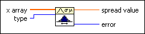
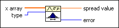

Measures of Spread VI
Owning Palette: Probability & Statistics VIs
Requires: Full Development System
Computes the spread of the data values in x array.

 Add to the block diagram Add to the block diagram |
 Find on the palette Find on the palette |
Owning Palette: Probability & Statistics VIs
Requires: Full Development System
Computes the spread of the data values in x array.

| Add to the block diagram |
Find on the palette |
 |
x array specifies the data set. | ||||||||
 |
type specifies the type of spread to compute.
|
||||||||
 |
spread value returns the spread of the data in x array. | ||||||||
 |
error returns any error or warning from the VI. You can wire error to the Error Cluster From Error Code VI to convert the error code or warning into an error cluster. |